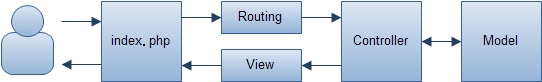

负责初始化系统运行环境并执行应用程序，类自动加载实现，获取请求、响应对象，协调处理用户请求与处理,跳转分发等工作。
我们再index.php中通过调用\wf\core\App类来执行应用程序。
require_once 'src/wf/App.php';
$app = \wf\core\App::getInstance();
// 执行应用程序
$app->dispatch(); 
\wf\core\App类提供接口支持站内页面请求转移到其它的控制器Acton（调用站内其他控制器的动作）
使用：
$this->dispatch("$mod.$ctl.$act/$id/$other");
或
$this->dispatch(array(
'mod' => $mod,
'ctl' => $ctl,
'act' => $act,
'params' => array('a', 'b', 'c'),
'args' => array(),
));\wf\core\App::getInstance()->getRequest();\wf\core\App::getInstance()->getResponse();Windwork实现自动加载类的功能，在系统运行时，根据类名自动加载src/wf和src/module目录下的类文件。
spl_autoload_register(function($class) {
$src = strtr($class, '\\', '/');
$src = trim($src, '/');
$src = SRC_PATH."{$src}.php";
return include $src;
}, false, true);